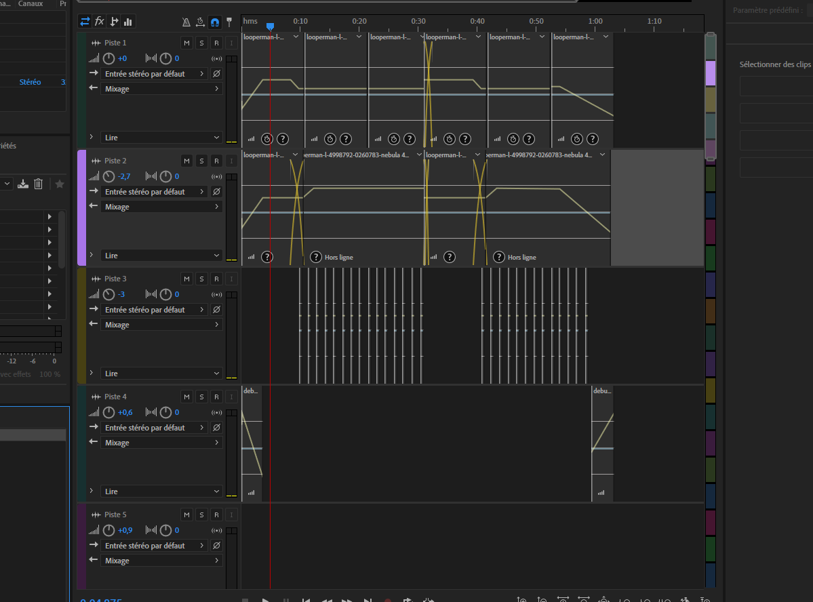
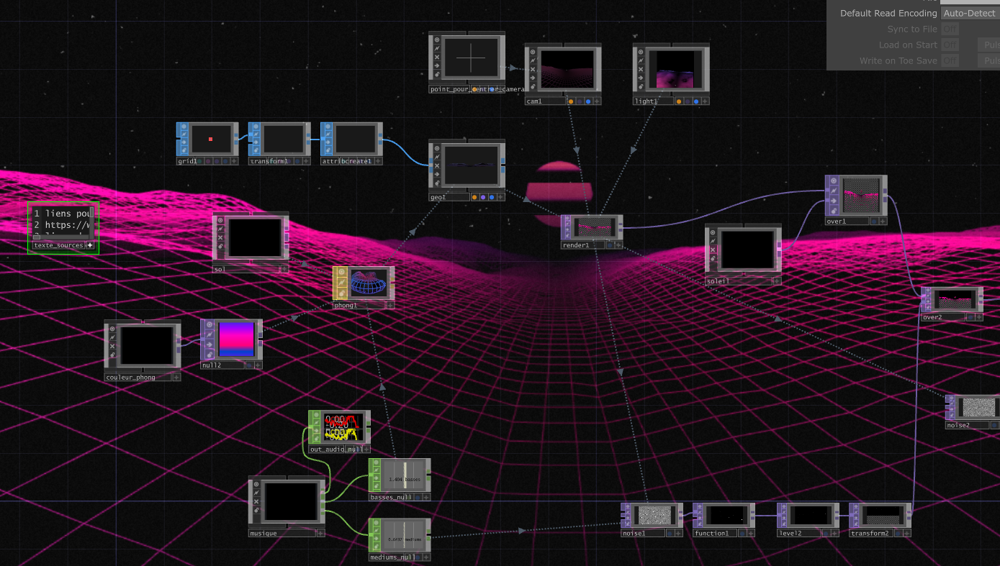

Recette en pot
voir le siteLogiciels et languages utilisés
HTML
CSS
Javascript
Résumé

L'objectif du projet était de redesigner le site web de Recette en pot déjà existant et d'ensuite faire le HTML,CSS et javascript. Puis, nous avions appris à utiliser les balises forms.
Le début
Dans un autre cours nous avions fait le design du site web que nous allions commencer. En classe nous avons commencer à faire le html de la page d'accueil.
Le CSS
Une fois le html de la page d'accueil terminé, j'ai fait le css de la page d'accueil et ensuite j'ai commencer à faire le html de la page "Créer une campagne".
Page Créer
Ensuite, dans la page créer une campagne, j'ai créer un formulaire et j'ai fais le css de cette page. On a appris à savoir comment modifier le "setup" de base que le html met de base pour avoir un formulaire personnalisé.
JavaScript
Finalement, une fois tout le html et css de fini, j'ai fait le javascript du site qui consistait à faire un scrolly telling, un curseur et modifier l'interface des vidéos youtube.Pour conclure, j'ai fait le responsive.